1. Подготовка перед игрой
Перед тем как начать игру, помогите всем игрокам надеть фазеры (жилеты) и попросите их нажать на курок — это активирует фазер.
Если в зале темно, на пульте дистанционного управления есть фонарик — включается нажатием на логотип Delta Strike.
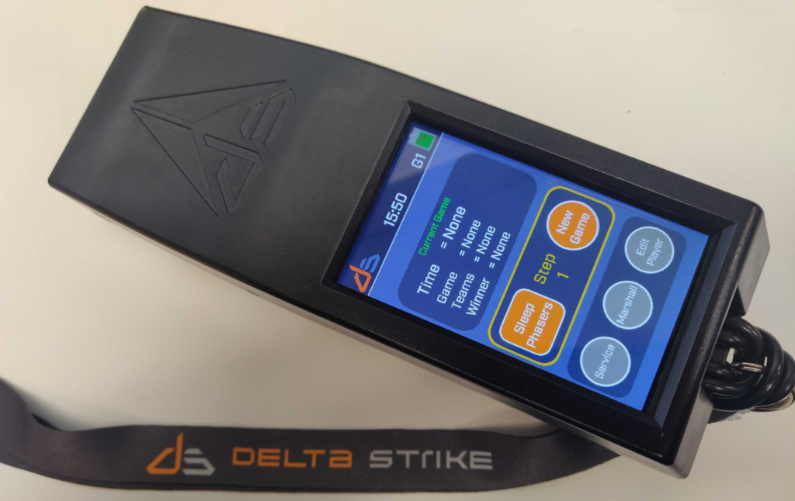
2. Запуск игры с пульта дистанционного управления — пошагово
Чтобы начать игру, нажмите кнопку «New Game».
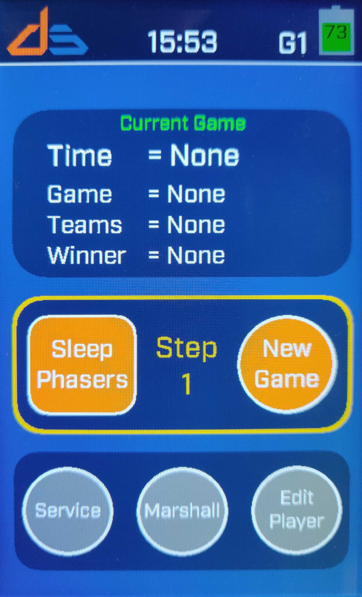
Выберите тип игры, в которую хотите сыграть, и нажмите «Next». При создании игры команды распределяются случайным образом.
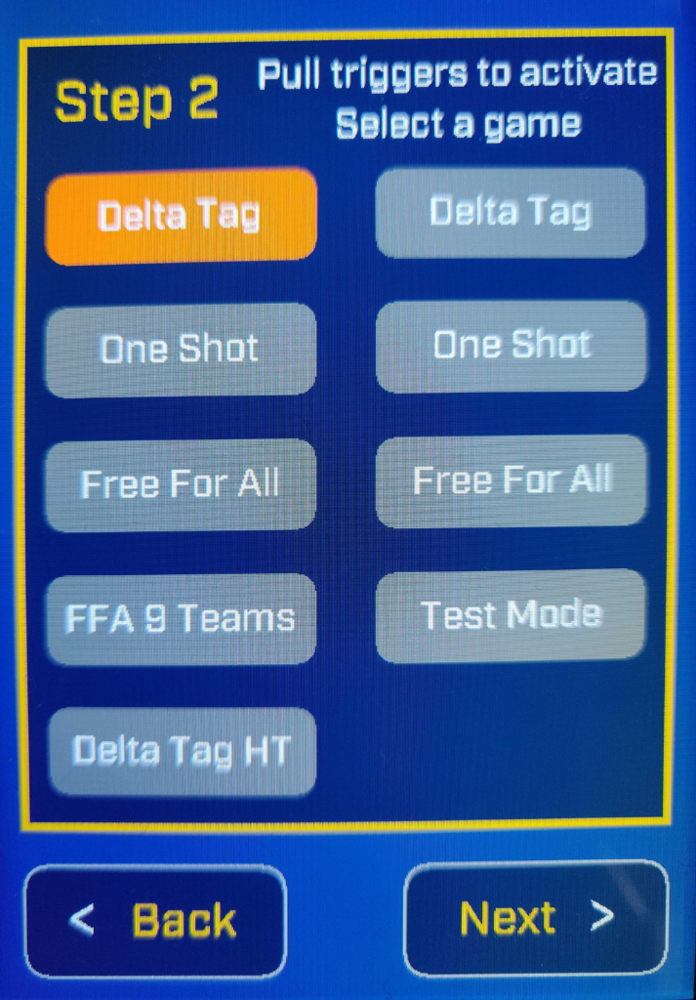
На экране подтверждения вы можете назначить игроков в конкретные команды:
- направьте пульт на жилет игрока;
- нажмите кнопку R (красный), G (зелёный) или B (синий) — в зависимости от нужного цвета команды;
- для дополнительных вариантов цветов нажмите «More Player Options» → «All Team Colors».
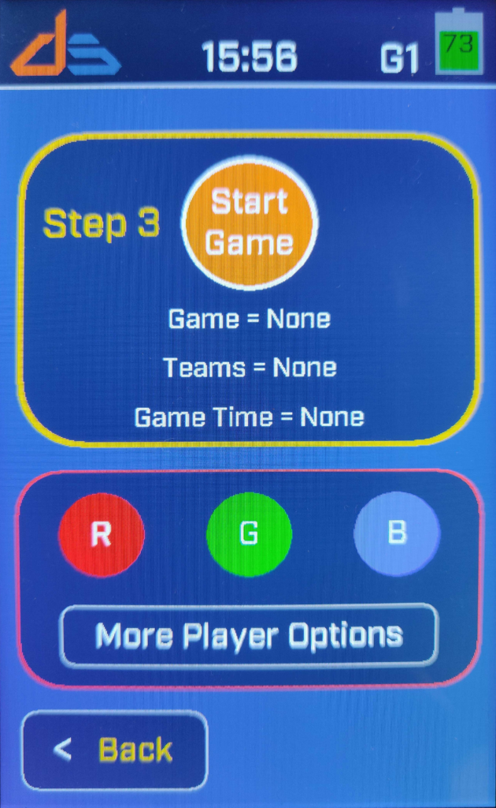
Чтобы изменить цвет жилета:
- направьте пульт на нужный жилет и нажмите кнопку нужного цвета;
- чтобы изменить цвет нескольких жилетов сразу, удерживайте кнопку цвета и «проведите» инфракрасным лучом пульта по нескольким фазерам.
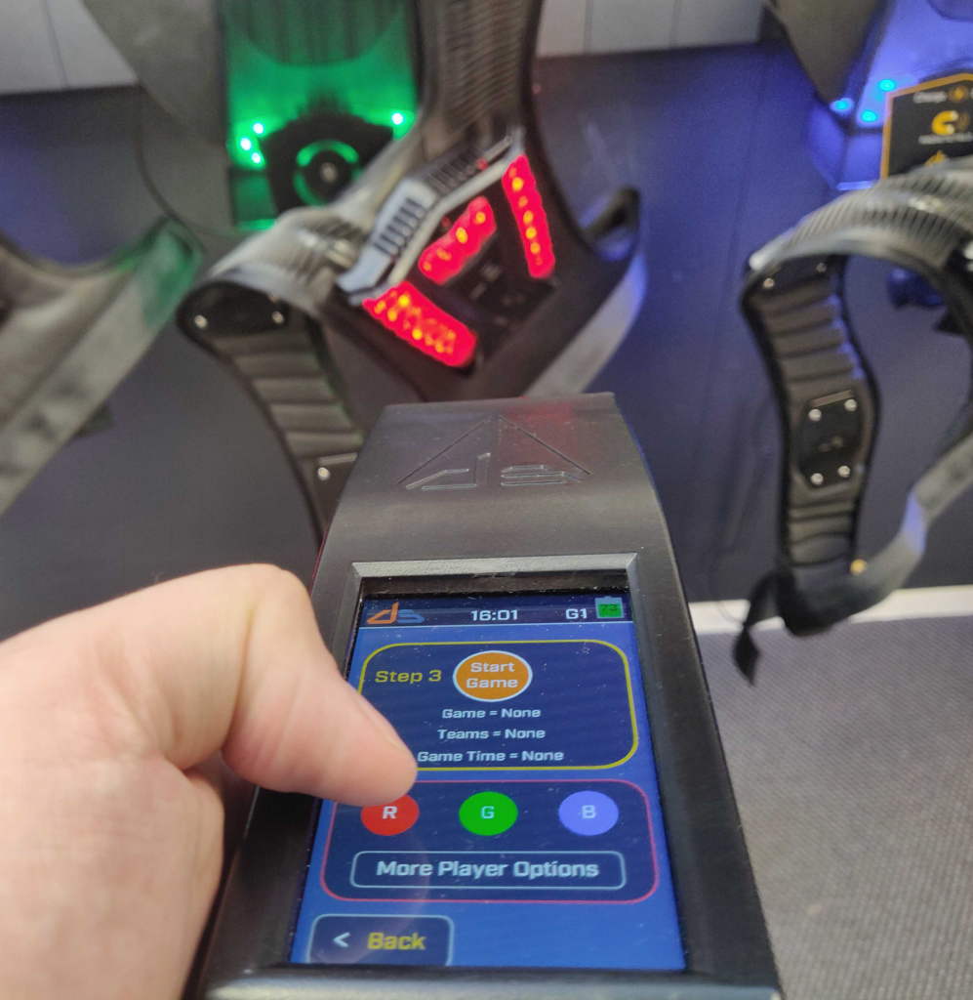
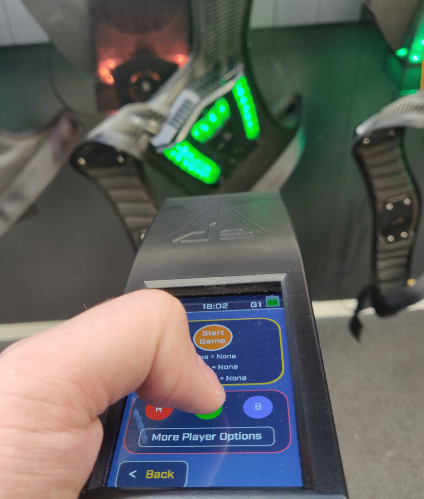
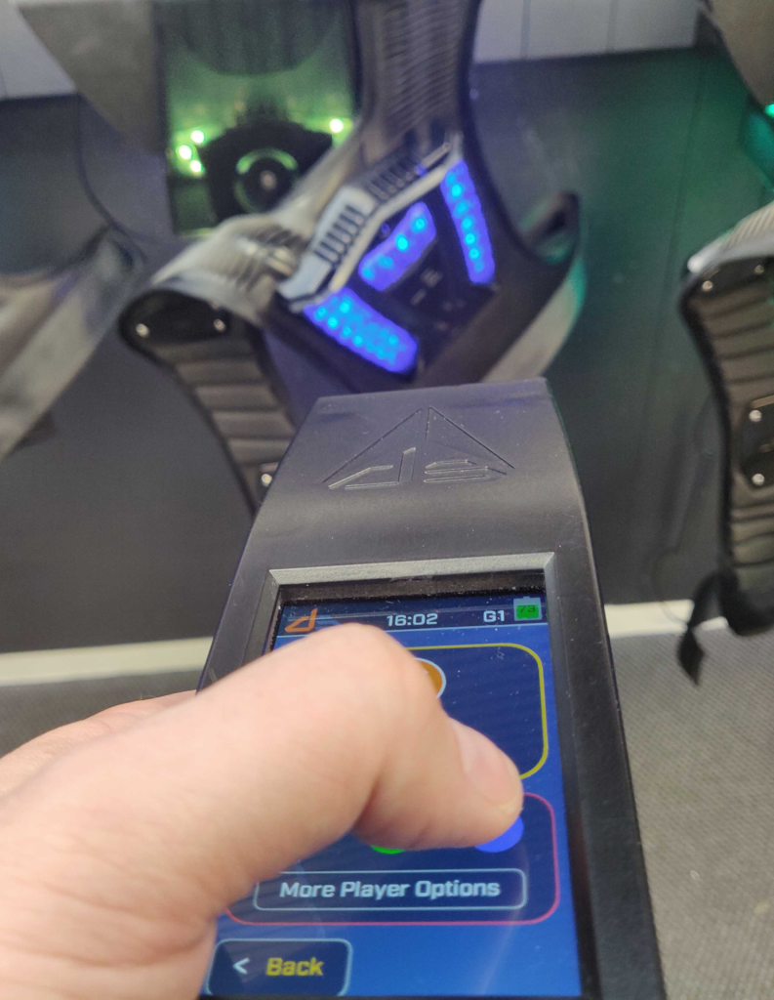
Когда цвета команд выбраны и игроки готовы, нажмите «Start Game» — игра начнётся после короткого обратного отсчёта.
После завершения игры нажмите «Sleep Phasers», чтобы перевести все фазеры в спящий режим. Это предотвращает случайные сбои, например самопроизвольный запуск игры.
Видео: запуск игры через игровой менеджер
3. Дополнительные настройки игрока (через «More Player Options»)
На пульте дистанционного управления есть кнопка «More Player Options» (доступна также на последнем экране перед началом игры). В этом меню есть следующие кнопки:
- «All Team Colors» — открывает расширенный экран выбора цвета. Чтобы назначить цвет, направьте пульт на жилет и нажмите нужную кнопку цвета.
- «Single Hand Mode» — режим стрельбы одной рукой: фазер не будет требовать обязательного хвата второй рукой для выстрела. Полезно для юных игроков и игроков с ограниченными возможностями, а также в любых других случаях, когда это нужно.
- «Friendly Fire Mode» — включает и выключает огонь по игрокам своей команды («дружественный огонь»).
Чтобы команда друзей или родителей с детьми попала в одну команду — назначьте им одинаковый цвет вручную (см. шаг 4 выше).
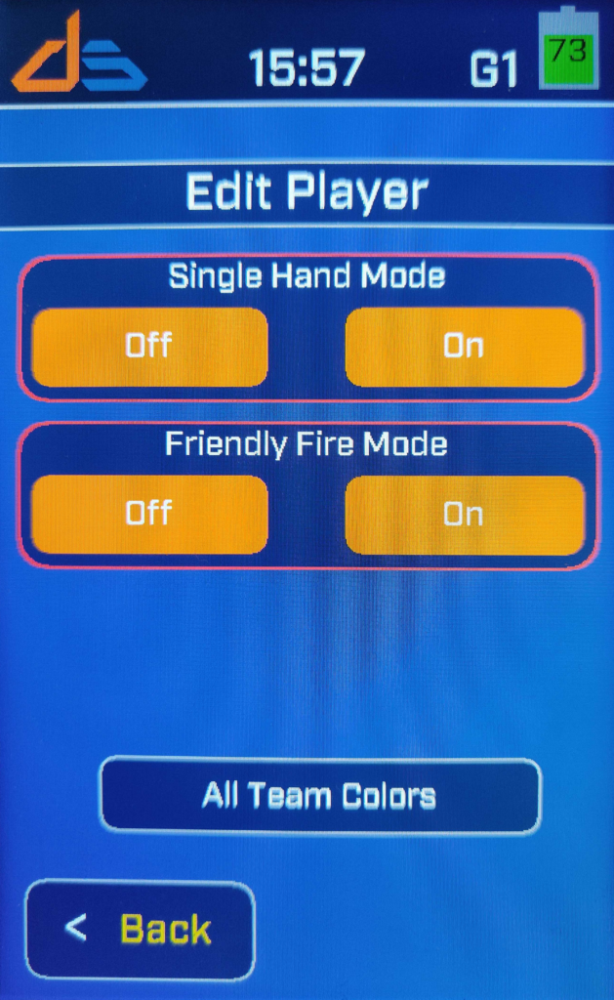
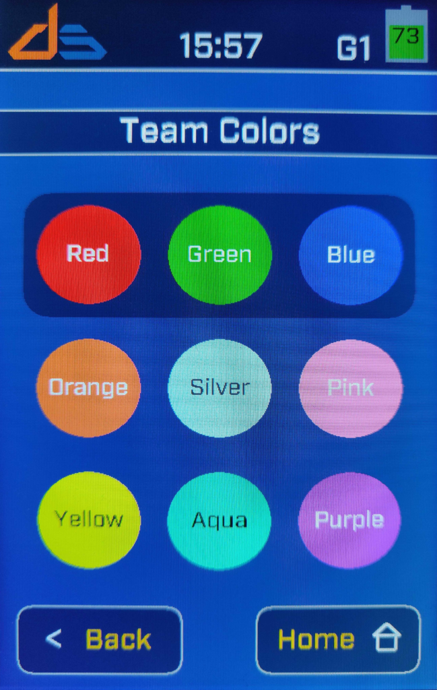
4. Режимы фазера — описание индикаторов
Индикаторы на жилете и экран фазера всегда показывают, в каком режиме находится фазер. Смотреть на экран не обязательно — по подсветке жилета можно понять текущий режим.
Режим зарядки
Во время проводной или беспроводной зарядки на жилете отображается световой узор зарядки. Чем больше горит лампочек, тем больше заряд батареи. При низком заряде подсветка горит только на нижних уровнях. Уровень заряда также отображается на экране фазера.
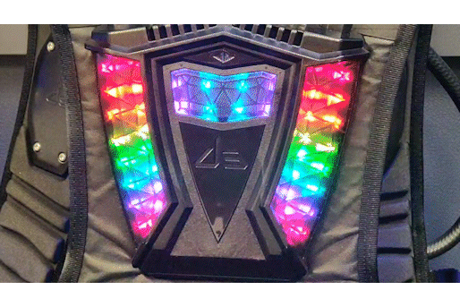
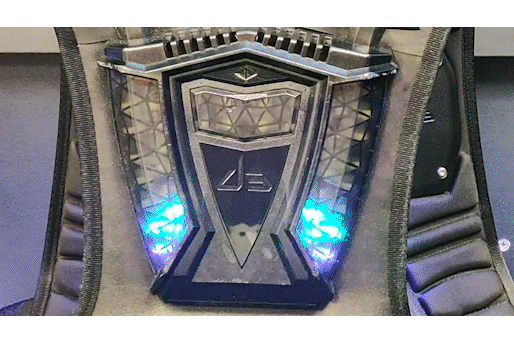
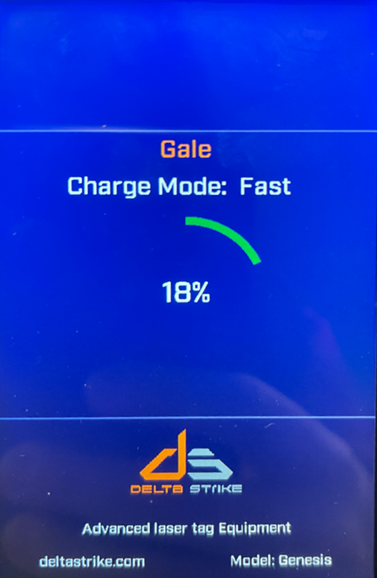
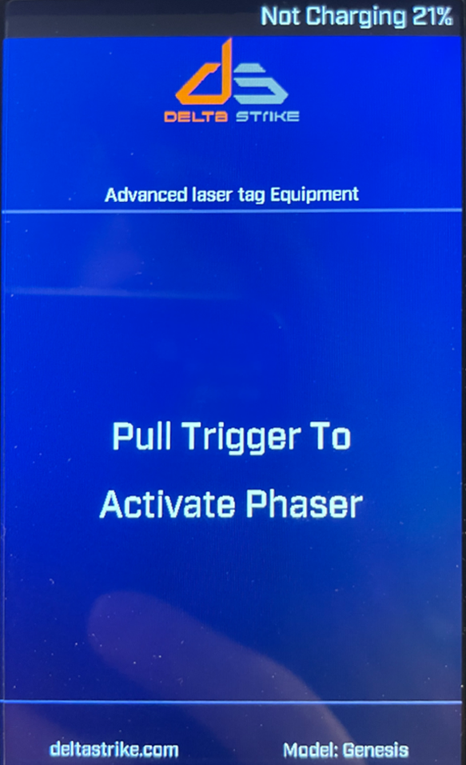
Спящий режим
Если фазер не заряжается и простаивает 5 минут, он автоматически переходит в спящий режим — все индикаторы и экран гаснут.
- Чтобы вывести фазер из спящего режима — нажмите на курок.
- Чтобы перевести все фазеры в спящий режим после игры — всегда нажимайте кнопку «Sleep Phasers».
- Если фазер без подсветки не реагирует на курок — вероятно, села батарея, нужно поставить на зарядку.
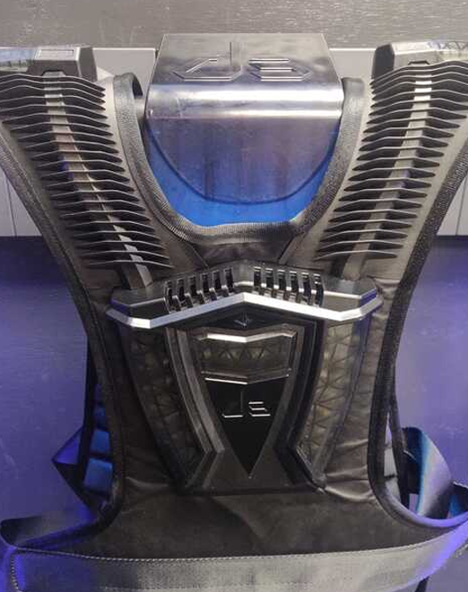
Предматчевый режим (режим пробуждения)
После извлечения из зарядки или перезагрузки через игровой менеджер фазер переходит в предматчевый режим:
- жилет медленно меняет цвета — это означает, что игрок ещё не нажал на курок;
- игроку нужно нажать на курок, чтобы фазер «понял» свою готовность к игре;
- после нажатия курка подсветка загорается белым и плавно переключается между ярким и тусклым светом;
- если игроку ещё не назначена команда — экран и подсветка остаются белыми;
- после назначения команды жилет начинает медленно мигать цветом команды этого игрока — это удобный момент, чтобы при необходимости поменять цвет команды игрока.
Когда игра начинается, через динамики арены и фазеры звучит объявление «Игра началась».
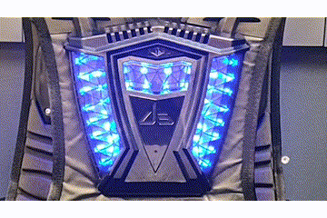
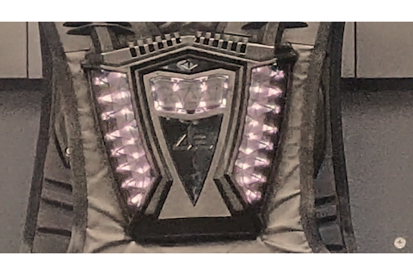
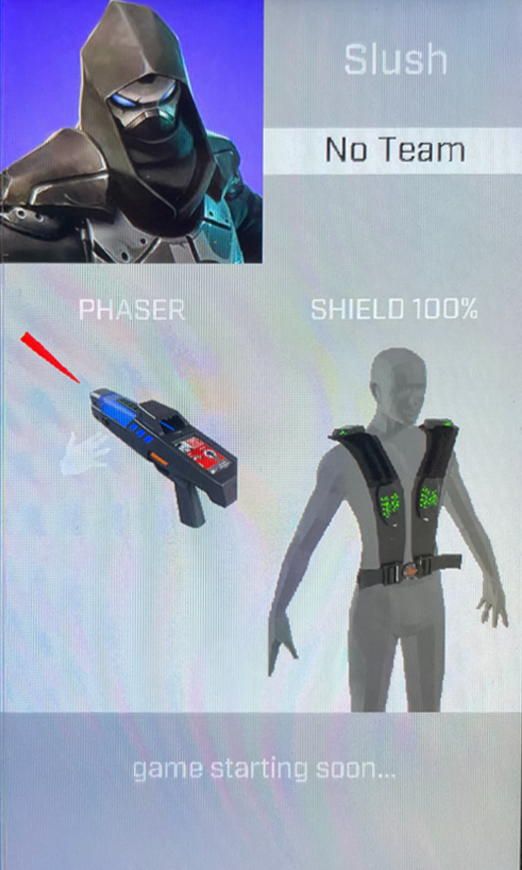
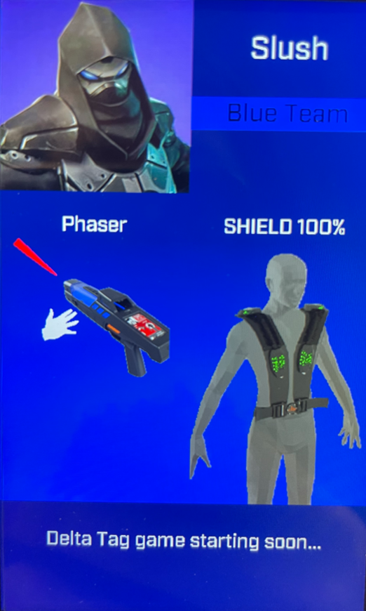
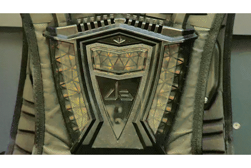
Игровой режим
- В начале игры на экране фазера появляется короткий обратный отсчёт.
- Подсветка жилета начинает быстро двигаться и ярко светиться — это привлекает внимание других игроков.
- На экране фазера во время игры отображается: щит, текущее оружие, команда игрока, а также бонусы или специальные сообщения, относящиеся к конкретной игре.
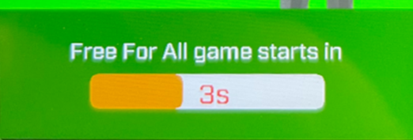
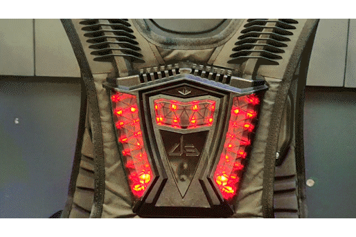
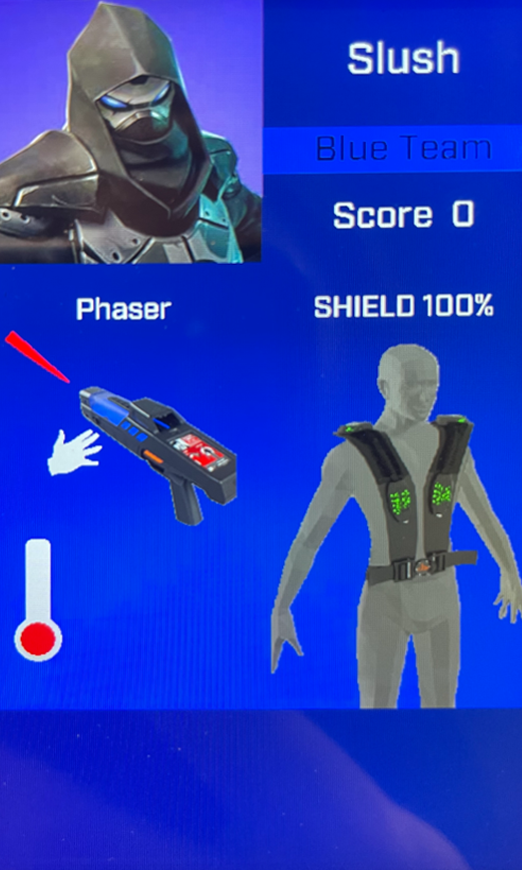
Режим послеигрового обновления
- По окончании игры подсветка жилета и экран начинают медленно двигаться.
- На экране фазера появляется сообщение, указывающее игроку вернуться в комнату для переодевания.
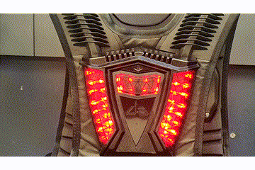
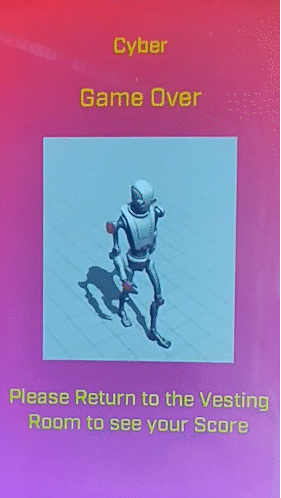
5. Режимы игры (типы игр)
На экране «Game Select» доступно множество типов игр. Ниже — краткое описание выбранных режимов, со сложностью, составом команд и защитой (Shield).
Delta One Shot (One Shot)
Классический лазертаг без щита — игра идёт быстрее. Элементы арены такие же, как в Delta Tag. Побеждает команда с большим количеством очков.
One Shot Free for All
То же самое, что Delta One Shot, но без щита и без команд — каждый сам за себя.
Delta Tag
Стандартный режим с двумя видами оружия и полным щитом. Элементы арены работают в обычном режиме.
Delta Tag — 4 Teams
Тот же Delta Tag, но игроки делятся на четыре команды.
Agents
Один из самых популярных специальных режимов. Все игроки начинают синими; вскоре часть игроков случайно становится красными и получает 50 очков за каждые 5 секунд в этом статусе. Синий может «украсть» красный статус, пометив красного игрока.
Delta Respawn
Классика Delta Strike. Метка соперника приносит очки команде; после получения метки игрок должен вернуться к базовой станции своей команды и постоять перед ней 2–3 секунды для возрождения. Побеждает команда с наибольшим количеством очков.
Sharpshooter
Игра на меткость с винтовкой XR Energy. Метка в плечевой датчик стоит 200 очков — в 4 раза больше, чем в грудь или спину. Винтовка отключает соперника всего за 2 попадания.
Backstabber
Очки за метки зависят от того, куда попали: метка в спину — 200 очков, в плечи — 60, в грудь — 50. Важно прикрывать спину!
Territories
Захват и удержание базовых станций. Захваченная база приносит команде очки каждые 10 секунд (15–30 очков в зависимости от типа базы). Метки игроков дают всего 20 очков — основной упор на удержание баз.
6. Использование веб-портала игрового сервера (game service)
Этот способ используйте только если пульт дистанционного управления недоступен.
Запуск программного обеспечения. Убедитесь, что приложение игрового сервера Delta Strike запущено (запускается через соответствующую иконку), и проверьте, что оборудование подключилось.
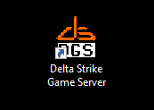
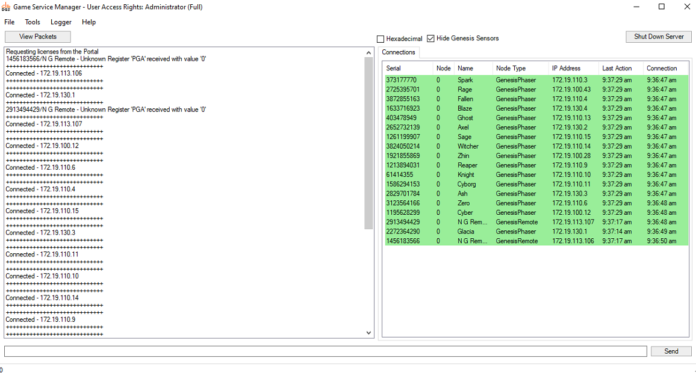
Вход в систему игрового менеджера.
- Откройте браузер Firefox и введите в адресную строку:
localhost.
Логин: staff | Пароль: staff1
Подготовка фазеров.
- Перейдите на экран оборудования — здесь видны все фазеры и можно ими управлять.
- Чтобы перевести фазеры в спящий режим: отметьте их галочками (или выберите все), нажмите «Actions» → «Sleep». Во время игры фазеры в спящий режим перевести нельзя.
- После перевода в спящий режим попросите клиентов надеть фазеры и нажать на курок — фазер перейдёт в предматчевый режим, группа готова к игре.
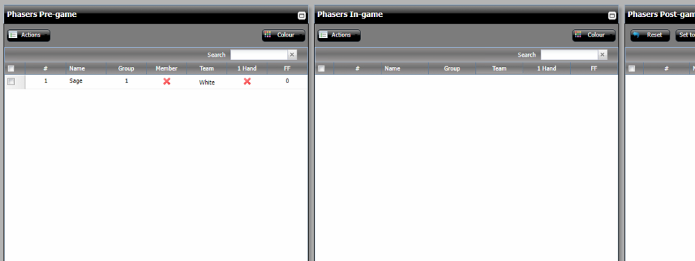
Выбор игры.
- Перейдите на экран «Games».
- В разделе «Standby Groups» выберите созданную игровую группу.
- Выберите нужный тип игры в разделе «Game Select» — командные цвета будут присвоены игрокам случайным образом.
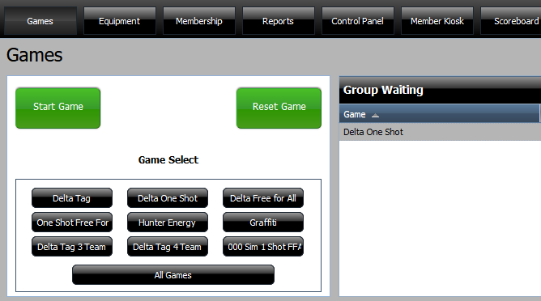
Начало игры. Нажмите кнопку «Start Game» — группа перейдёт в раздел «Group Game».
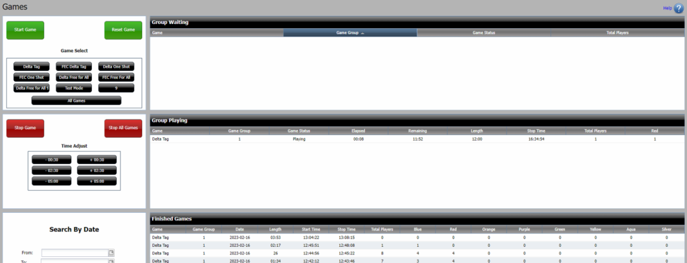
Остановка игры
- Чтобы остановить игру штатно: выберите игру и нажимайте кнопку «-5:00», пока игровое время не дойдёт до 0:00.
- Для быстрой остановки: нажмите «Stop All Games» или выберите конкретную игру и нажмите «Stop Game».
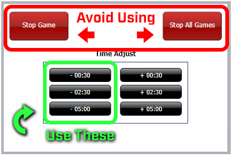